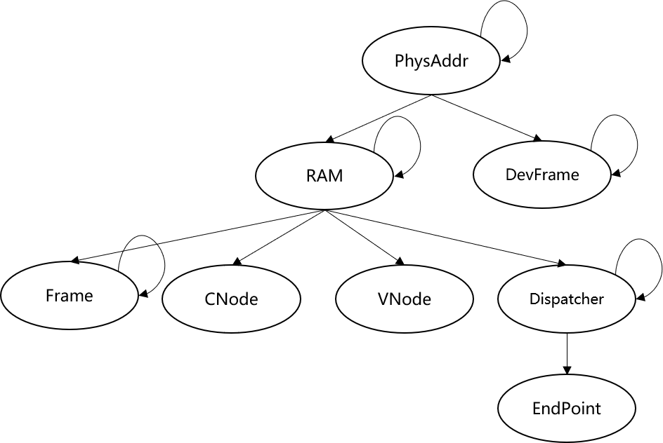

1、Capability系统设计实现概述
一个capability其实就是一个指针，但又是指针的一个超集，一个capability往往含有两个成员，一个是指向某块内存的地址addr，另一个是权限rights，权限用以说明某进程可以对 通过该capability寻址得到的内存 进行哪种操作（如只读、读写、只写）。
因此，可以把capability理解为一种带有权限的指针 ，我在后文中提到“capability”时，既有可能是指保存该“capability”本身的那块内存，也有可能是指该“capability”所指向的那块内存。大家需要根据语境自行判断。举一个例子，比如后文提到的“l1_CNode用来存储l2_CNode”，这句话中的“l1_CNode”就是指类型为l1_CNode类型的capability所指向的某一段内存，而这句话中的“l2_CNode”是指保存l2_CNode类型的capability本身的那块内存，即该内存中的数据为地址+权限。
Barrelfish内核为每一个dispatcher维护其CSpace（某进程拥有的所有capability构成该进程的CSpace）,沿用seL4中CNode及两级寻址的方式设计，具体方式为在dcb（dispatcher control block,进程控制块）中保存Root_CNode的地址。
Root_CNode是一块固定大小的内存，这块内存按照cte(capability table entry)的大小分为很多slots块，每一个slot块中可保存一个cte，一个cte就是一个capabiltiy，会指向另一块保存有数据的内存。
Root_CNode又称为l1_CNode,Root_CNode中保存的cte必须是l2_CNode类型的capability,每个l2_CNode也指向一块固定大小的内存，这块内存其中也有很多slots,每个slots中可保存一个cte，l2_CNode中保存的cte就是系统中真实使用的各种其他类型的capability，如dispatcher类型的、ram类型的等等。
l1_CNode(root_CNode)和l2_CNode都是用来存储capability的capability。只不过l1_CNode中保存的是l2_CNode类型的capability,而l2_CNode中保存的是其他非CNode类型的capability。
查询一个dispatcher的任意一个capability，都需要经过其root_CNode，首先定位到保存该cap的l2_CNode，最后再定位到该cap。有点类似于两级页表寻址，Root_CNode是页目录，l2_CNode是页表，l2_CNode中的某个slot是页表项。每个进程的dcb中都保存了root_CNode的地址。通过该地址可以索引该进程的整个CSpace。
l1_CNode和l2_CNode也是capability所有不同类型中的两种类型，与ram | dispatcher | ... 一样也是capability，所有capbility都有如下性质：即包含指向某一段内存的信息（虚地址addr、虚拟内存大小size）以及相关权限rights。
内核中定义实现了capability的相关数据结构，定义实现如下：
文件路径：kernel/include/capabilities.h
/**
* \brief A CTE (Capability Table Entry).
*
* A CTE is an entry in a CNode, which in turn is an entry in CSpace, the
* capability space. CSpace is a guarded tree structure. Refer to the seL4
* reference manual for further information about how CSpace is implemented.
*/
struct cte {
struct capability cap; ///< The capability
char padding0[ROUND_UP(sizeof(struct capability), 8)- sizeof(struct capability)];
struct mdbnode mdbnode; ///< MDB "root" node for the cap
char padding1[ROUND_UP(sizeof(struct mdbnode), 8) - sizeof(struct mdbnode)];
struct delete_list delete_node; ///< State for in-progress delete cascades
/// Padding to fill the struct out to the size required by OBJBITS_CTE
char padding[(1UL << OBJBITS_CTE)
- sizeof(struct delete_list)
- ROUND_UP(sizeof(struct capability), 8)
- ROUND_UP(sizeof(struct mdbnode), 8)];
};
由于每个slots是固定大小，所以定义了一些padding用来对齐大小。我们首先关注第一个成员cap，后两个成员mdbnode和delete_node暂时不管，后面会详细说明。
注意到其中的第一个成员cap的类型为capability类型的结构体，该结构体定义如下:
文件路径：build/armv8/include/barrelfish_kpi/capbits.h
(这个文件是由Hamlet————一种描述capability类型系统的DSL自动生成的)
在Hamlet中定义cap的类型和接口，然后自动生成部分capability相关的代码。对于Hamlet感兴趣的话，因为ETH自己暂时没有Hamlet相关的文档，可以看下System Research at Harvard的这个仓库：
https://github.com/Harvard-PRINCESS/Guppy/wiki/Hamlet-Tutorial
struct capability {union capability_u u;
enum objtype type;
CapRights rights;};
可以看到一个cap包含三个成员变量，分别是
- 一个用来保存具体类型的cap的联合体
- 一个枚举类型的类型变量
- 以及该cap所对应的权限
其中第一个联合体成员定义如下：
union capability_u {struct Null null;
struct PhysAddr physaddr;
struct RAM ram;
struct L1CNode l1cnode;
struct L2CNode l2cnode;
struct FCNode fcnode;
struct Dispatcher dispatcher;
struct EndPoint endpoint;
struct Frame frame;
struct Frame_Mapping frame_mapping;
struct DevFrame devframe;
struct DevFrame_Mapping devframe_mapping;
struct Kernel kernel;
struct VNode_x86_64_pml4 vnode_x86_64_pml4;
struct VNode_x86_64_pml4_Mapping vnode_x86_64_pml4_mapping;
struct VNode_x86_64_pdpt vnode_x86_64_pdpt;
struct VNode_x86_64_pdpt_Mapping vnode_x86_64_pdpt_mapping;
struct VNode_x86_64_pdir vnode_x86_64_pdir;
struct VNode_x86_64_pdir_Mapping vnode_x86_64_pdir_mapping;
struct VNode_x86_64_ptable vnode_x86_64_ptable;
struct VNode_x86_64_ptable_Mapping vnode_x86_64_ptable_mapping;
struct VNode_x86_32_pdpt vnode_x86_32_pdpt;
struct VNode_x86_32_pdpt_Mapping vnode_x86_32_pdpt_mapping;
struct VNode_x86_32_pdir vnode_x86_32_pdir;
struct VNode_x86_32_pdir_Mapping vnode_x86_32_pdir_mapping;
struct VNode_x86_32_ptable vnode_x86_32_ptable;
struct VNode_x86_32_ptable_Mapping vnode_x86_32_ptable_mapping;
struct VNode_ARM_l1 vnode_arm_l1;
struct VNode_ARM_l1_Mapping vnode_arm_l1_mapping;
struct VNode_ARM_l2 vnode_arm_l2;
struct VNode_ARM_l2_Mapping vnode_arm_l2_mapping;
struct VNode_AARCH64_l0 vnode_aarch64_l0;
struct VNode_AARCH64_l0_Mapping vnode_aarch64_l0_mapping;
struct VNode_AARCH64_l1 vnode_aarch64_l1;
struct VNode_AARCH64_l1_Mapping vnode_aarch64_l1_mapping;
struct VNode_AARCH64_l2 vnode_aarch64_l2;
struct VNode_AARCH64_l2_Mapping vnode_aarch64_l2_mapping;
struct VNode_AARCH64_l3 vnode_aarch64_l3;
struct VNode_AARCH64_l3_Mapping vnode_aarch64_l3_mapping;
struct IRQTable irqtable;
struct IRQDest irqdest;
struct IRQSrc irqsrc;
struct IO io;
struct Notify_IPI notify_ipi;
struct ID id;
struct PerfMon perfmon;
struct KernelControlBlock kernelcontrolblock;
struct IPI ipi;
struct ProcessManager processmanager;
struct Domain domain;};
可以看到这个联合体包含了Barrelfish系统中可能出现的所有类型的capability的结构体定义。由于不同体系结构的CPU的内核所需要的capability类型是不同的（比如可以看到上面很多名字中带x86、ARM、aarch64的cap类型），所以Barrelfish的开发者选择用Hamlet DSL来自动生成这部分代码。
下面对capability的类型系统作说明。
对capability类型系统的解释：
不同类型的capability代表不同类型的系统资源，比如:
- dispatcher类型的cap就指向内核中一个dispatcher的dcb（dispatcher control block）
- ram类型的cap就指向一段虚拟内存。。
- PhysAddr类型的cap就指向一段未被映射的物理内存
- CNnode类型的cap就指向一段专门用来保存cap的虚拟内存
- ...
这里附上上述类型的cap的结构体定义：
struct Dispatcher {struct dcb* dcb;};
struct RAM {genpaddr_t base; // genpaddr 指 general physical address
pasid_t pasid;
gensize_t bytes;};
struct PhysAddr {genpaddr_t base;
pasid_t pasid;
gensize_t bytes;};
struct L1CNode {lpaddr_t cnode; // lpaddr 指 local physical address
CapRights rightsmask;
gensize_t allocated_bytes;};
struct L2CNode {lpaddr_t cnode;
CapRights rightsmask;};
capability类型与类型之间是可以相互转换的，但是需要遵循一定的规则，barrelfish规定了一棵类似于树形的结构，来表示合法的类型转换路径,见下图：

类型转换举例：
比如最基础的类型是PhysAddr，所有其他类型都从该类型转换而来，因为所有的资源说白了都是一块内存，只不过里面保存的数据的类型不一样。
PhysAddr可以转换为Ram，可能需要经过一定的虚实映射操作，barrelfish在进行虚实映射时也用到了cap来索引页目录及页表等资源，比如上述的VNode_x86_64_pml4 vnode_x86_64_pml4以及所有其他和这个长得很像的东西，都是指向页表的cap，对应每种页表cap还有映射cap，这里暂不深究，这个属于barrelfish的虚存实现机制了，感兴趣可以看《http://www.barrelfish.org/publications/gerber-master-vm.pdf》 这篇文章。
PhysAddr转换为Ram类型后,Ram类型的cap又可以转换为dispatcher、l1_CNode、l2_CNode.....等各种类型的cap。当然，Ram类型的cap也可以转换为自身的ram类型，即上图中每个节点指向自身的路径，当我们需要将一块size较大的ram分割为两块size较小的ram时。
类型转换的术语叫做 retype.后续会再对这个做解释。
就像面向对象的思想一样，对于每种不同类型的cap，系统提供了不同的对其操作的接口，调用这些接口的术语叫做invoke。
可以在 include/barrelfish_kpi/capabilities.h 中找到相关定义，比如：
- 对于dispatcher类型的cap（指向进程控制表），提供了以下类型的command：
/**
* Specific commands for dispatcher capabilities.
*/
enum dispatcher_cmd {
DispatcherCmd_Setup, ///< Set dispatcher parameters
DispatcherCmd_Properties, ///< Set dispatcher properties
DispatcherCmd_PerfMon, ///< Performance monitoring
DispatcherCmd_SetupGuest, ///< Set up the DCB of a guest domain
DispatcherCmd_DumpPTables, ///< Dump hw page tables of dispatcher 比如打印维护进程虚存空间的页表
DispatcherCmd_DumpCapabilities, ///< Dump capabilities of dispatcher· 又比如打印该进程所拥有的所有cap（打印CSpace）
DispatcherCmd_Vmread, ///< Execute vmread on the current and active VMCS
DispatcherCmd_Vmwrite, ///< Execute vmwrite on the current and active VMCS
DispatcherCmd_Vmptrld, ///< Make VMCS clear and inactive
DispatcherCmd_Vmclear, ///< Make VMCS current and active
};
- 对于VNode类型的cap（指向一段虚存），提供了以下类型的command：
enum vnode_cmd {
VNodeCmd_Map,
VNodeCmd_Unmap,
VNodeCmd_Identify, ///< Return the physical address of the VNode
VNodeCmd_ModifyFlags,
};
- 对于CNode类型的cap（指向一段用来保存capability的内存，即指向某一个cap），提供了以下类型的command：
/**
* CNode capability commands.
*/
enum cnode_cmd {
CNodeCmd_Copy, ///< Copy capability
CNodeCmd_Mint, ///< Mint capability
CNodeCmd_Retype, ///< Retype capability ————>这就是之前说到的类型转换操作
CNodeCmd_Delete, ///< Delete capability
CNodeCmd_Revoke, ///< Revoke capability
CNodeCmd_Create, ///< Create capability
CNodeCmd_GetState, ///< Get distcap state for capability
CNodeCmd_GetSize, ///< Get Size of CNode, only applicable for L1 Cnode
CNodeCmd_Resize, ///< Resize CNode, only applicable for L1 Cnode
};
上述提供的对CNode的操作，其中Resize、GetSize都是针对CNode本身进行的操作，而Copy、Mint、Retype、Delete等都是针对这个CNode中的作为叶子节点的非CNode类型capability进行的操作。 可见对某一个cap进行某种操作时，需要对该cap所位于的CNode调用该操作。
所有对于cap的操作，都需要通过该cap所在的CNode调用。
比如我想将一个ram类型的cap转型为Dispatcher类型，用来存储dcb,那么就需要对该ram类型的capability所在的root_CNode调用invoke操作，同时将invoke时的cmd参数设置为CNodeCmd_Retype，同时设置好其他参数，比如转型前的类型和转型后的类型，转型前的cap的地址以及转型后的cap所存放地址等等。等。
上述这些对cap进行的操作会使cap之间存在副本、后代这样的关系，我们通过之前的介绍已经知道了,一个进程的CSpace是一个两级树形结构,它的根是Root_CNode,root下面有很多l2_CNode,每个l2_CNode下面是最终的叶子节点capabilty,但是上述的copy、retype等操作以及barrelfish所支持的在进程间发送/接受cap的功能，会使同一个CSpace内，乃至不同CSpace内部的capability产生联系，这种联系说白了就是“副本”or“后代”or“祖先”这样的关系。
如果一个capA经过retype操作转型为capB，那么capA就是capB的“祖先”，capB就是capA的“后代”。“副本”关系则由copy操作产生。
在系统的运行中常常需要查询这些关系，从而保证上述针对cap的操作能够正确地完成，（举个例子，比如一个ram类型的capability（我们称其为capA）已经经过一次retype操作，得到了一个dispatcher类型的capB，那么之后就不能再对capA进行retype操作，将其retype成别的类型的cap，（因为capA所指向的那段内存，也就是capB所指向的内存，我们已经用来存dcb了，不能再存别的），所以我们在对一个cap进行类型转换即retype操作前，往往要查询其是否已经有后代了）。为此，Barrelfish使用了一个叫做mdb的数据库（mapping database）来存储capability之间这样的关系，以便系统运行时动态地查询、更新cap之间的关系。
后面会详细介绍mdb。
mdb简介
Barrelfish的mdb实现为AA树，是红黑树的一个变种。AA树和红黑树都是搜索树，即树中的节点是存在一定的偏序关系的。
Barrelfish将capability按照cap类型、内存基地址、内存大小等因素排序，从而产生cap之间的偏序关系。比如 父类型 > 子类型 基址低 > 基址高 size大 > size小。
互为副本的两个cap, 其类型、基址、大小等相同，因此在树中的位置也相邻。而互为祖先后代的两个cap,在树中的位置一定是祖先在前，后代在后，满足上述的自定义偏序。
上文中cte的结构体定义中，有一个成员为
struct mdbnode mdbnode; ///< MDB "root" node for the cap
```
这就是用来表示该cte所代表的capabiltiy,在mdb中的表示。
mdbnode结构体的定义如下:
文件路径：include/mdb/types.h
/**
- \brief A mapping database node. */ struct mdbnode { struct cte *left, *right; genpaddr_t end; mdb_root_t end_root; mdb_level_t level; bool remote_copies:1, remote_ancs:1, remote_descs:1; bool locked:1, in_delete:1; coreid_t owner; };
可以看到这个树节点的定义除了包含指向左右两个子节点的cap的指针，还包含一些其他数据，这些数据我们后面介绍。
mdb的代码实现：
include/mdb/mdb.h
include/mdb/mdb_tree.h
include/mdb/types.h
lib/mdb/mdb.c
lib/mdb/mdb_tree.c
### 多核系统capability模型设计
上述capability模型主要解决了单内核下的情况，这里主要分析一下在Barrelfish这样的多内核操作系统中，上述capability系统存在的问题以及Barrelfish是如何解决这些问题的。
# 2、capability相关的代码模块分析
### 1、模块分析
x86下代码模块（armv7、armv8类似）
User-level lib/barrelfish/capabilities.c - user-level capability management stuff usr/monitor/capops, usr/monitor/capops/include, usr/tests/capops - C code for user-level capabilities operations Kernel-level capabilities/caps.hl - capabilities definition file tools/create_static_cap_dot.py - generate a dependency/hierarchy graph from a Hamlet file kernel/cap_delete.c - Kernel capability delete code kernel/include/cap_predicates.h - capability pre-declares (?) include/barrelfish_kpi/capabilities.h - required capabilities definitions build/x86_64/capabilities/*.c - Hamlet capabilities output C
kernel目录下
kernel/include/capabilities.h
cte等数据结构的定义、内核中所需要用到的所有capability相关的函数的声明
kernel/include/cap_predicates.h
一些返回值为布尔类型的对cte或capability进行判断的函数
kernel/capabilities.c
内核中所有需要用到的capability相关函数的实现，包括cap创建、删除、索引等
两级树状CSpace的实现，各种cap操作的实现以及对cap系统的tracing支持
kernel/cap_delete.c
由于多内核的分布式特性，导致对capability的删除操作比较复杂，所以单独分离出来作为一个文件。
lib目录下主要是lib/barrelfish和lib/mdb
lib/mdb/mdb.c
lib/mdb/mdb_tree.c
lib/barrelfish/capabilities.c
usr目录下主要是monitor中
usr/monitor/capops/ 整个目录实现monitor的cap操作
usr/monitor/invocations.c
if目录下是各种消息接口定义，是用一种叫做flounder的DSL语言实现的，flounder实现的消息接口通过haskell实现的编译器可以生成相应的c代码，和capability有关的主要是monitor部分的消息接口：
if/monitor.if
/* for UMP/BMP cap tx */
message cap_send_request(
uintptr mon_id,
cap cap,
capid capid);
message cap_move_request(
uintptr mon_id,
give_away_cap cap,
capid capid);
message cap_receive_request(
uintptr conn_id,
errval err,
give_away_cap cap,
capid capid);
if/monitor_blocking.if
/* Remote cap operation messages */
rpc remote_cap_retype(in cap src_root, in cap dest_root, in uint32 src,
in uint64 offset, in uint64 objtype, in uint64 objsize,
in uint64 count, in uint32 to, in uint32 slot,
in int dcn_level, out errval err);
rpc remote_cap_delete(in cap croot, in uint32 src, in uint8 level,
out errval err);
rpc remote_cap_revoke(in cap croot, in uint32 src, in uint8 level,
out errval err);
rpc get_phyaddr_cap(out cap pyaddr, out errval err);
rpc get_io_cap(out cap io, out errval err);
// Get a capability that is targeted at the local apic.
rpc get_irq_dest_cap(out cap io, out errval err);
// debug cap identify mechanism
rpc cap_identify(in cap cap, out errval err, out caprep caprep);
// XXX: Hack to set a cap remote until we have x-core cap management
rpc cap_set_remote(in cap cap, in bool remote, out errval err);
/* Allocate an IRQ on the arm plattform */
rpc arm_irq_handle(in cap ep, in uint32 irq, out errval err);
/* Retrieve local arch-specific core ID (e.g. APIC ID on x86)*/
rpc get_arch_core_id(out uintptr id);
/* get cap that can be used to send IPIs */
rpc get_ipi_cap(out cap cap);
rpc forward_kcb_request(in coreid destination, in cap kcb, out errval err);
### 2、接口分析